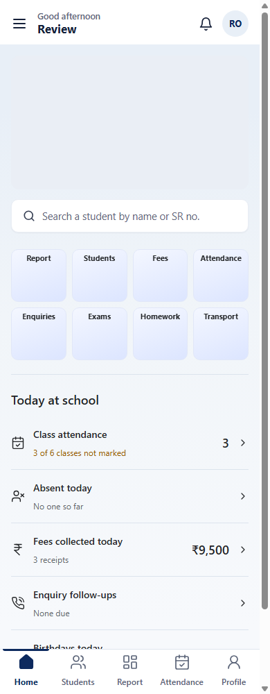

Proposed colour direction only. No changes applied to the app. The sample illustrates colour roles, not a final homepage mockup.

Keep existing approved banner and illustrations.
One dark anchor. Solid quiet tiles. One white operational register. Existing artwork supplies additional colour.
Body on canvas: 13.01:1
Secondary on canvas: 5.00:1
White on navy: 13.91:1
Warning on white: 6.39:1
Navy on tile: 13.07:1
Ink on white: 15.19:1